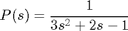
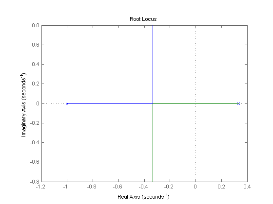
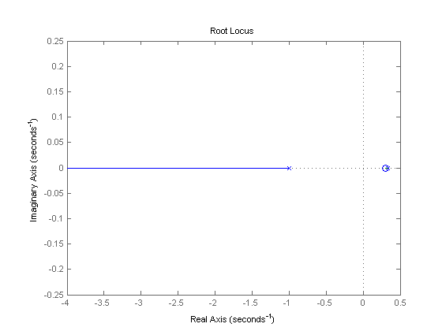
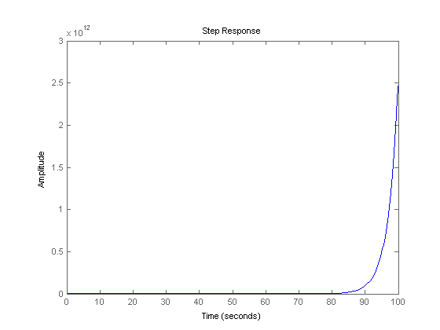
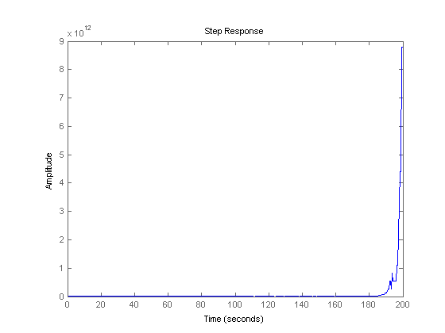

Extras: Pole-Zero Cancellation
When an open-loop system has right-half-plane poles (in which case the system is unstable), one idea to alleviate the problem is to add zeros at the same locations as the unstable poles, to in effect cancel the unstable poles. Unfortunately, this method is unreliable. The problem is that when an added zero does not exactly cancel the corresponding unstable pole (which is always the case in real life), a part of the root locus will be trapped in the right-half plane. This causes the closed-loop response to be unstable. The following example demonstrates this concept.
Suppose we have the open-loop transfer function given below.
(1)
Create a new m-file, and enter following code. Running this m-file should generate the following root locus plot:.
s = tf('s');
P = 1/(3*s^2 + 2*s - 1);
rlocus(P)
 We see that one of the open-loop poles is in the right-half plane. The closed-loop response will then be unstable if the gain is selected such that one of the closed-loop poles is in the right-half plane. We can make this system stable by choosing the correct gain, but let's see if we can make the system stable by performing a pole-zero cancellation. Inspecting the root locus above, we see that the unstable pole is in the vicinity of s = 0.3. Delete the rlocus command, and add the following lines into your m-file to add a zero at 0.3.
rlocus((s - 0.3)*P)
From the new root locus you can see that the unstable pole has almost been canceled. Now let's see what the closed-loop response looks like. Add the following additional code to the end of your m-file.
sys_cl = feedback((s - 0.3)*P,1); step(sys_cl,100)
The system is still unstable. The reason for this is that the zero does not exactly cancel the unstable pole. Can we make the system stable by moving the zero so that it's exactly on the pole? From the original transfer function, you know that the open-loop pole is actually at 1/3. What if we put our zero at exactly 1/3? Go back to the m-file and change the zero to 1/3 as shown below. Rerunning the m-file will generate the root locus plot shown below.
rlocus((s - (1/3))*P)
This time we see that the zero is right on the unstable pole (you may use zoom command to zoom into the plot, to see that the zero is exactly on the pole). What does the closed-loop response look like now, is it stable? Change your m-file as shown below and run to generate the closed-loop step response shown below.
sys_cl = feedback((s - (1/3))*P,1); step(sys_cl,200)
It is still unstable! The response takes much longer to blow up, so we have almost canceled the effect, but almost is not good enough when considering stability. A system which is "almost stable" is still unstable, and its response will go to infinity. Even in MATLAB an exact cancellation was not possible because of numerical round-off.
From the example above, we see that the pole-zero cancellation is theoretically okay, but practically unobtainable. Even if a perfect pole-zero cancellation were possible, the system would not be practically implementable because of internal stability issues. For example, if you designed a controller with an unstable pole that cancelled a zero in the plant, the output of the controller could grow unbounded to the point that an actuator would saturate or the plant could reach some physical limits. Therefore, the linear model of the plant would no longer hold and you wouldn't get the desired cancellation effect. A solution to this example can be found using the method introduced in the root locus tutorial.